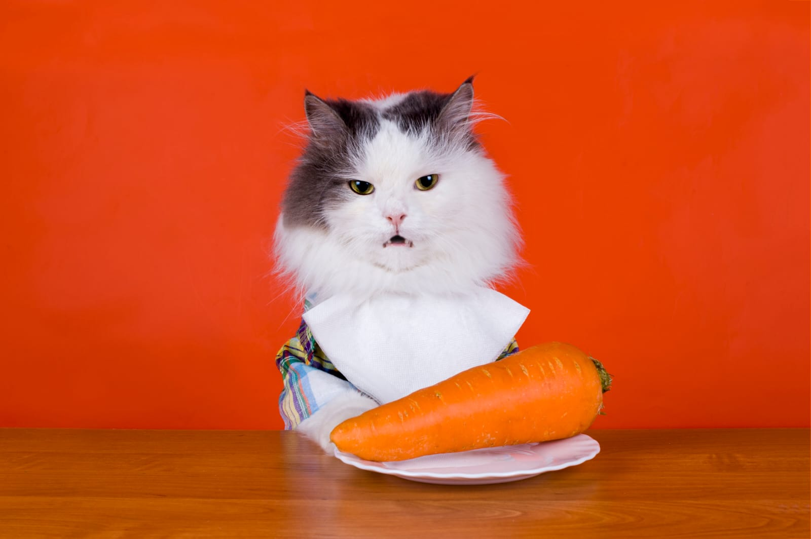

<ion-header [translucent]="true">
  <ion-toolbar>
    <ion-buttons slot="start">
      <ion-menu-button></ion-menu-button>
    </ion-buttons>
    <ion-title>Nosotros</ion-title>
    
  </ion-toolbar>
</ion-header>

<ion-content>
  <ion-card>
    <ion-card-header>
      <ion-avatar>
        
      </ion-avatar>
      <ion-card-title>Laura Ancapi</ion-card-title>
    </ion-card-header>

    <ion-card-content>
      Estudiante de Analista programador computacional de DuocUC, sede San Joaquín.
    </ion-card-content>

  </ion-card>

</ion-content>

